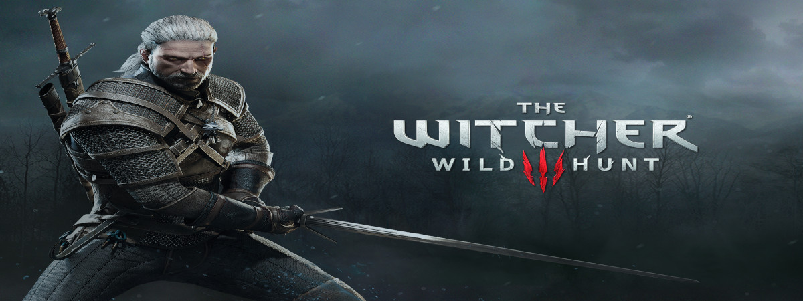

- 

Jogo de Estratégia é um gênero de Video-game onde enfatiza habilidades de pensamento e planejamento para alcançar a vitória. Os jogos enfatizam a estratégia, tática e algumas vezes desafios lógísticos. Muitos jogos também oferecem desafios econômicos e exploração.
De Banco Imobiliário a WAR, jogos de tabuleiro são um clássico da infância de muita gente – responsáveis tanto por horas de diversão quanto por brigas homéricas entre amigos durante as partidas.
Com o avanço dos videogames, no entanto, muitos destes jogos começaram a ser portados para plataformas digitais, em uma tentativa de torná-los mais acessíveis – afinal, nem todo mundo quer ou pode manter caixas e mais caixas de jogos guardadas dentro de casa.
Confira abaixo clássicos dos tabuleiros em versão digital:
Simples e frenético, UNO é um jogo de cartas cujo objetivo é esvaziar sua mão antes dos adversários. A tarefa, no entanto, não é nada fácil, já que é possível usar cartas especiais para dificultar a vida dos outros jogadores. A Ubisoft é responsável pelo port oficial do jogo, disponível para várias plataformas.
Um dos jogos de tabuleiro mais icônicos de todos os tempos, Monopoly – conhecido aqui no Brasil através de sua versão modificada, Banco Imobiliário – também foi outro título portado pela Ubisoft para plataformas virtuais.
O destaque fica por conta do tabuleiro em 3D, cenário animado e regras customizáveis. Monopoly também está disponível em Português brasileiro.
Um dos jogos de tabuleiro mais populares do Brasil, o WAR é uma versão modificada do clássico Risk, jogo de guerra cujo objetivo é dominar territórios e continentes para derrotar adversários.
O jogo de estratégia foi portado para plataformas digital e publicado pela própria Grow – com versões para um jogador ou multiplayer online.
GWENT é um jogo de cartas com escolhas e consequências, onde habilidade, e não sorte, é a sua maior arma. Escolha uma facção, reúna um exército e enfrente outros jogadores em diversos modos de jogo. Com centenas de cartas para colecionar (heróis carismáticos, feitiços poderosos e habilidades especiais) você sempre terá novas estratégias para explorar.
Considerado um jogo de "estratégia em escala galáctica", Stellaris coloca você no lugar de um comandante com a maior ambição de todas: conquistar uma galáxia inteira.
Como seria de se esperar, essa conquista exige muita coisa. Diplomacia, administração de recursos e liderar a população do seu planeta são apenas algumas das suas responsabilidades. Mas a expansão galáctica é um negócio complicado: você terá que enfrentar as raças alienígenas nativas dos planetas que for conquistar e usar as maravilhas tecnológicas delas para seu próprio ganho.
Conforme a guerra interestelar avança, você precisará dominar estratégias para avançar pelo espaço profundo, gerenciando alianças e inclinando a balança do poder a seu favor. Afinal, ninguém disse que dominar a galáxia seria fácil.
A Wargaming continuou a entregar jogos de batalha de veículos de guerra nessa geração e o destaque é o excelente World of Warships. De graça para jogar, faz um sucesso enorme no Steam e também nos consoles dessa geração.
O jogo conta com dezenas de navios do século XX para escolher e batalhar. Os jogadores também podem jogar em equipe, o que trouxe ainda mais jogadores para o título. Hoje há até uma versão para IOS que também é muito jogada.